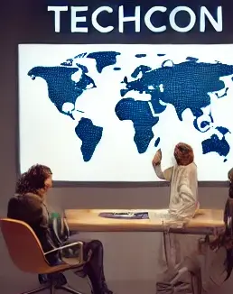

The Origins and Evolution of TechCon: A Journey Through Innovation
Early Beginnings
TechCon, which stands today as one of the most prominent technology
conferences globally, began its journey in the early 2000s as a small
gathering of tech enthusiasts and pioneers. Back then, the conference
was primarily a platform for startups and emerging tech companies to
showcase innovations in computing, software development, and emerging
internet technologies. It was humble in scale but bold in vision.
Expansion in the 2010s
As the world embraced rapid advancements in mobile technologies, cloud
computing, and artificial intelligence, TechCon began to grow
exponentially. By 2010, it had become a pivotal event where industry
leaders, developers, and academics converged to discuss and shape the
future of technology. The introduction of keynote speeches by
prominent figures such as CEOs of leading tech companies added
prestige and attention to the event.
A packed audience during a keynote speech by a prominent CEO at
TechCon 2010.
TechCon’s Global Influence in the 2020s
In the 2020s, TechCon evolved into a global phenomenon, attracting
attendees from over 100 countries. Virtual events were introduced
during the pandemic, allowing the conference to reach even broader
audiences. The conference now covers a wide array of fields, from
blockchain and cybersecurity to quantum computing and biotechnology.
TechCon adapts with virtual events, reaching a global audience.
Looking to the future
As we look ahead to TechCon 2024, the conference continues to push
boundaries, fostering innovation and collaboration. With a focus on
sustainability, diversity, and inclusivity, TechCon promises to remain
at the forefront of technological evolution, inspiring generations of
creators, developers, and visionaries.
Goals and Driving Principles of TechCon
The mission of TechCon is to provide a platform where innovators,
developers, and tech leaders can come together to shape the future of
technology. The core goals and driving principles of the conference
include:
- Fostering Innovation and Creativity
TechCon actively encourages the exploration of cutting-edge
technologies and innovative solutions. By providing spaces for
demonstrations, workshops, and hackathons, the conference aims to
inspire participants to think beyond conventional boundaries and
drive progress in fields like AI, quantum computing, and
biotechnology.
Participants brainstorming during an innovation workshop at
TechCon.
- Promoting Collaboration and Knowledge Sharing
One of TechCon's key principles is fostering collaboration between
industries, academia, and governments. It offers opportunities for
cross-disciplinary dialogue, allowing experts from diverse fields to
collaborate on real-world solutions and share knowledge that
benefits the broader tech community.
TechCon attendees collaborating on technological
advancements.
- Commitment to Diversity and Inclusion
TechCon is dedicated to creating a welcoming and inclusive
environment. It seeks to amplify the voices of underrepresented
groups within the tech industry by promoting diversity in speakers,
attendees, and themes. The conference ensures that a wide range of
perspectives are heard, leading to more innovative solutions and
approaches.
A panel discussion on diversity and inclusion in the tech
industry at TechCon.
Sustainability and Ethical Responsibility
As the tech industry grows, so
does its impact on the environment and society. TechCon emphasizes the
ethical development of technology and highlights sustainable practices
in its talks and exhibitions. It encourages the responsible use of
technology, balancing progress with the need to protect the planet and
ensure privacy and security.

A talk on sustainable technology practices at TechCon 2023.
These goals guide the ongoing evolution of TechCon, making it a pivotal
event that not only showcases technological advancements but also
ensures that innovation aligns with values like ethics, collaboration,
and sustainability.